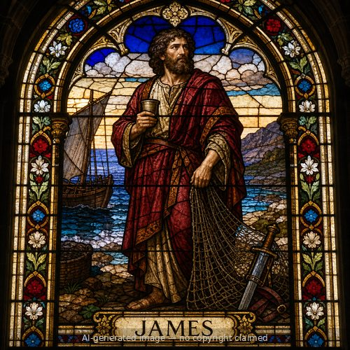

James (M)
First named in Matthew 13:55
James grew up in Nazareth as one of Jesus' younger half-brothers, the son of Mary, named alongside Joseph, Simon, and Judas when Jesus' hometown neighbors wondered how a carpenter's son could teach with such authority (Matthew 13:55; Mark 6:3). During Jesus' ministry His brothers did not believe in Him (John 7:5). That changed after the resurrection: Paul records that the risen Christ appeared to James (1 Corinthians 15:7). James became a recognized leader of the Jerusalem church. When Peter escaped from Herod's prison, he asked that word be sent to James (Acts 12:17). Paul, visiting Jerusalem after his conversion, met "James, the Lord's brother" (Galatians 1:19), and later named him with Peter and John as the church's pillars (Galatians 2:9). At the Jerusalem council James summed up the debate: God was calling a people for His name from among the Gentiles, so the church should not trouble Gentile believers who were turning to God, asking only that they keep away from idols, sexual immorality, and blood (Acts 15:13-21). Years later Paul reported his missionary work to James and all the elders (Acts 21:18). James is traditionally identified as the author of the letter bearing his name, which opens simply "James, a bond-servant of God and of the Lord Jesus Christ" (James 1:1) and insists that genuine faith shows itself in works; Jude calls himself "brother of James" (Jude 1:1). His life traces one of the New Testament's clearest arcs from unbelief to faithful service.
Thought for Today
James doubted his own brother Jesus during his earthly ministry. Jesus patiently turned him into a faithful servant — may he turn us too.
References: Matthew 13:55; Matthew 27:56; Mark 6:3; Mark 15:40; Mark 16:1; Luke 24:10; Acts 12:17; Acts 15:13-21; Acts 21:18; 1 Corinthians 15:7; Galatians 1:19; Galatians 2:9-12; James 1:1; Jude 1:1
Genealogy
Connections
New Testament Church
- Jerusalem — leader of the Jerusalem church
Acts 15:13-21; Acts 21:18-25; Galatians 1:19; Galatians 2:9
Places
Other people named James
